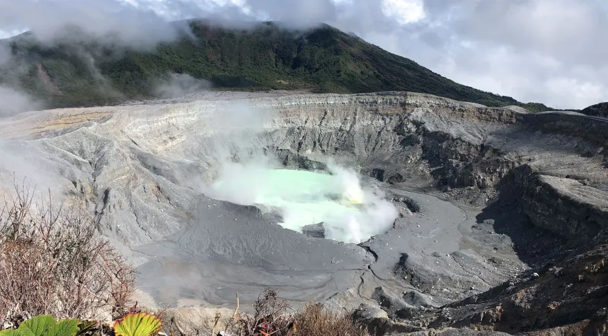

Lago vulcânico tóxico revela como a vida pode ter sido possível em Marte no passado
por: Guilherme Rocha
24/03/2023 08:04


Lago vulcânico tóxico revela como a vida pode ter sido possível em Marte no passado
Perto do cume do vulcão Poás da Costa Rica está um dos lagos mais ácidos da Terra, azul claro vibrante e cheio de metais tóxicos. De acordo com os pesquisadores, esse ambiente sobrenatural pode sugerir como a vida pode ter existido de vida antiga no planeta vermelho Cientistas investigam micróbios que, de alguma forma, sobrevivem em um dos lugares mais inóspitos da Terra: um lago quente, tóxico e acído em uma cratera vulãnica na Costa Rica. As maneiras como esses micróbios extremófilos se adaptam ao seu ambiengte infernal, isso nos mostra como esses micróbios poderiam ter vivido em Marte mais jovem, úmido e vulcânico.

Estou até pensando em estudar geologia

To aqui marcando presença lendo as notícias que o guilherme posta, muito bom

Nossa muito boa as notícias que o guilhemre posta!